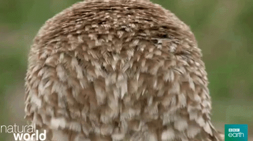

As you may have noticed already, the movement implementation of the previous chapter has one integral flaw: There is no way to actually rotate around the up-axis in order to turn around farther than a normal person’s neck allows. As this project is intended to help people with severely reduced freedom of movement, 360° full body turning may not be a possibility, and the turning angle needs to be defined by the maximum angle the neck can turn. I don’t know about the person reading this, but I for one am not an owl. Thus, I assume that a normal, healthy human has about a 90° sideways rotational angle1, which currently limits the locomotion to 180°, centered around the negative z-Axis. Note that this value likely varies between users, especially those with bodily impairments.
|

|
|---|
| The ideal user: Unfortunately, humans are usually not capable of rotating their head more than 90° to either side. |
One way to achieve 360° rotation is to use a kind of “redirected-walking”2 approach, where the view of the user is continuously altered to align with a given direction. In this case, the direction is back towards the center, i.e. the forward vector.
In Unity, one way to achieve this is to rotate the parent of the OVRCameraRig slightly around the y-Axis towards the current look-direction, to force the user to counteract the rotation to stay on their intended target. As luck would have it, we already set up a Parent object in the last chapter, to utilize the CharacterController. We can now simply rotate that object towards our camera forward vector. I also defined a deadzone angle - when the angle between player-forward and camera-forward is greater than the cone spanned by the deadzone angle, rotation is applied and the user needs to correct their head back to the center.
// [RelativeHeadLocomotion.cs]
private void Center(Player player) {
// First, let's define our to be edited direction as the direction of the camera
Vector3 camera = player.GetCamera().transform.forward.normalized;
camera.y = player.transform.forward.normalized.y;
#if DEBUG
// Visualize the target direction.
Debug.DrawRay(player.transform.position, camera * 5.0f, Color.red, 0.0f);
Debug.DrawRay(player.transform.position, player.transform.forward.normalized * 5.0f, Color.blue, 0.0f);
#endif
// Rotate the Player object slowly towards the camera direction.
// This forces the user to rotate their head the other direction, if they want to stay on their target.
if (Vector3.Angle(player.transform.forward, camera) >= this._centeringDeadzoneAngle) {
player.transform.rotation = Quaternion.LookRotation(
Vector3.RotateTowards(player.transform.forward, camera, Time.deltaTime, 0.0f)
);
}
}

|
|---|
| Return to Center: For this example, movement was disabled. The red line represents the camera direction, the blue line the direction of the player object, with a deadzone angle of 25°. |
Now, if you were to try this as-is yourself, you will quickly notice your head getting light and your stomach acting up. Especially when stationary, the effect of the automatic rotation combined with the rotation of your head attempting to counteract said automatic rotation causes severe motion sickness. The effect is much less present at higher movement speeds, however. Thus, I restricted rotation to only occur when the player is moving, with an additional two coefficients to control the influence the constant and dynamic speed modifiers have on the rotation speed. Only forward (and by extension backwards) movement is used for rotation here, as rotation during sideways movement results in even more motion sickness.
// [RelativeHeadLocomotion.cs]
float speed = coefficients.constant[FORWARD] * this._constantAggressivenessCoefficient
+ coefficients.dynamic[FORWARD] * this._dynamicAggressivenessCoefficient;
// ...
Vector3.RotateTowards(player.transform.forward, camera, speed * Time.deltaTime, 0.0f)
// ...
I used a constant aggressiveness coefficient of 1, and a dynamic aggressiveness coefficient of 0.15. Higher coefficients result in a tighter turning circle, but come with additional potential for motion sickness. The dynamic coefficient is intentionally kept low, and does not factor in the AOT of the HMD, again in order to reduce motion sickness. In general, the lower the coefficients, the less induced motion sickness. However, these values may be different for you, as I noticed early on with different VR applications, that I have an incredibly low threshold for getting motion sick. These values will be further refined in a later chapter.
Initial Demo
With everything set up, I was now ready to traverse the parkour for the first time using only my neck as a controller. Note that, at this point, switching between stationary and movement mode was simply done via a button on one of the controllers. Also, the actual speed-values, deadzone values and thresholds were not tuned. I still think it’s interesting to see one of the initial tests.
You can also see the (very buggy) “3D-Crosshair”, something that will be described in a later post. Also, one of the controllers wasn’t even connected, but I actually think it helps visualize the “return to center”-mechanic quite well in this case. In any case, for further demos the controller models will be disabled entirely.
What’s next?
In the next chapter, we will start to refine the values of all the locomotion systems to make movement feel responsive, fast and precise.
-
Swartz EE, Floyd RT, Cendoma M. Cervical spine functional anatomy and the biomechanics of injury due to compressive loading. J Athl Train. 2005 Jul-Sep;40(3):155-61. PMID: 16284634; PMCID: PMC1250253.. ↩︎
-
Razzaque, S., Swapp, D., Slater, M., Whitton, M.C. and Steed, A., 2002, May. Redirected walking in place. In EGVE (Vol. 2, pp. 123-130). ↩︎